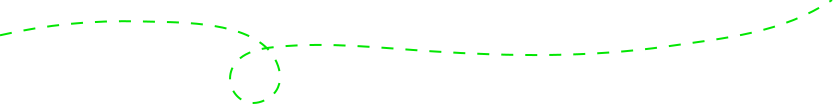
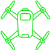
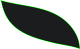
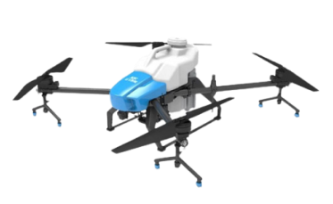
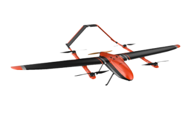
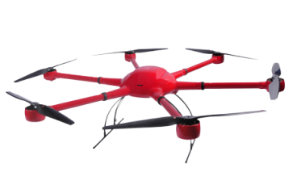
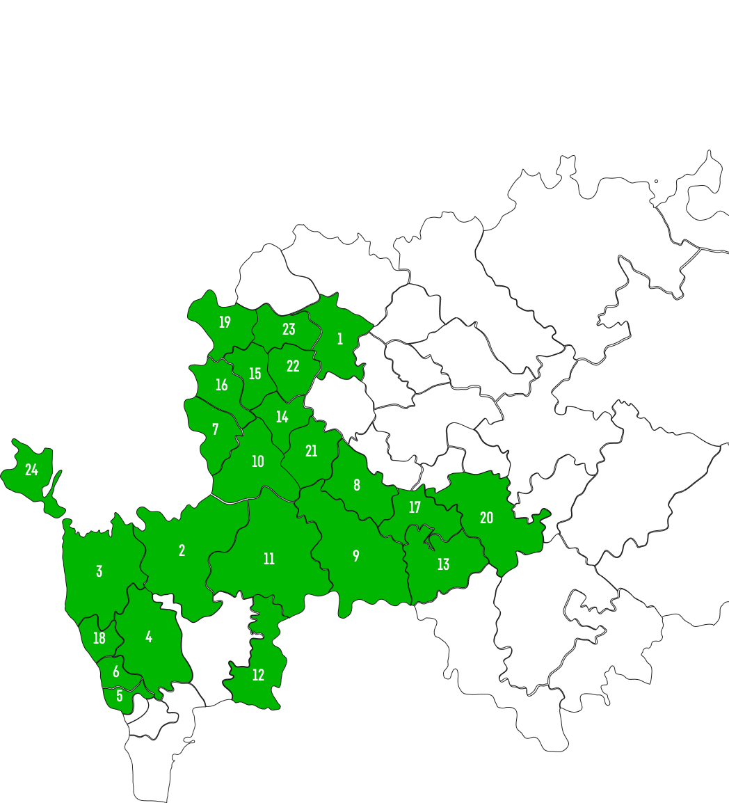
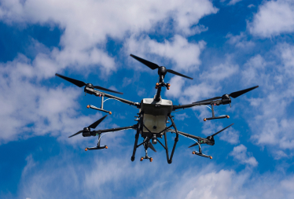
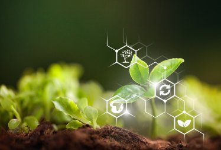
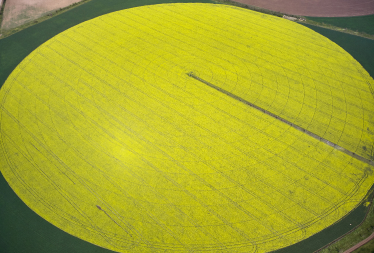

+7861 21791 18
+7861 21791 18


Агродрон AGR A22
- Бренд: AGR
- Модель: 101-0101
$15001.27




Все наши сотрудники имеют многолетний опыт работы в сфере беспилотной авиации. Нами было реализовано множество проектов различной тематики и самой различной сложности.
Наша компания использует современное оборудование, которое обеспечивает высокое качество в выполнении поставленных задач.
Использование беспилотных технологий экономит вам много времени и денег. За счет отсутствия технологической колеи сохраняется до 6% урожая. Снижение расхода препаратов до 30%
За рабочую смену наши специалисты способны защитить более 1000 гектар ваших полей, кустарников и деревьев.
Мы разрабатываем и производим беспилотные летательные аппараты, поэтому знаем все тонкости их работы и можем настроить их под конкретные задачи и потребности клиентов.
Любой наш аппарат можно сдать на плановое техническое обслуживание или же в ремонт в наш собственный сервис, который гарантирует качество и оперативность выполнения работ.

топ продаж

$15001.27

$18206.30

$13802.86
Принимаем заявки по биологической и химической защите растений дронами, картографии и мониторингу.
Компания STS.center применяет высокотехнологичные агродроны и БПЛА, которые модернизированы и собраны нашими инженерами для сельского и лесного хозяйства, а также для промышленности. В СТС Центр работают опытные агрономы, энтомологи, пилоты, менеджеры и инженеры. Сегодня мы имеем один из самых современных парков дронов в России, что позволяет нам выполнять работы широкого спектра от простой аэрофотосъемки до лидарного сканирования местности и тепловизионного контроля. Внедрение беспилотных технологий в вашем бизнесе поможет сэкономить время и деньги, а также позволит получить большое преимущество перед вашими конкурентами.
карта россии


Новые технологии не обходят стороной и самую консервативную отрасль – сельское хозяйство. Согласно прогнозам международной общественной организации Association for Unmanned Vehicle Systems International, в скором времени агросектор станет крупнейшим потребителем дронов – беспилотных летательных аппаратов (БПЛА).
Читать полностью
Использование дронов в земледелии и в целом в сельском хозяйстве - одно из наиболее перспективных направлений применения этой технологии. БЛА могут быть эффективно использованы для планирования и контроля этапов сельскохозяйственного производства, а также для химической обработки посевов и других растений.
Читать полностью
Многие руководители агрохозяйств только приблизительно знают площади своих полей, и это негативно влияет на точность расчетов внесения минудобрений и подсчета полученной продукции. Чтобы эффективно управлять сельскохозяйственным предприятием потребуется точное знание посевных площадей.
Читать полностью